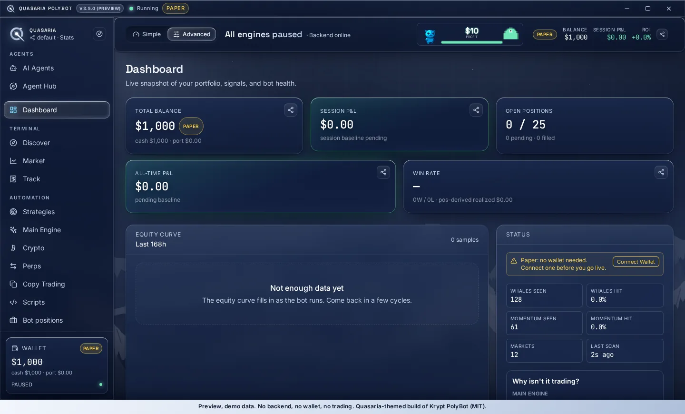
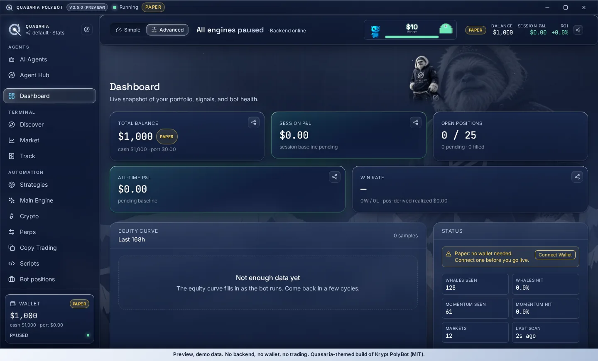
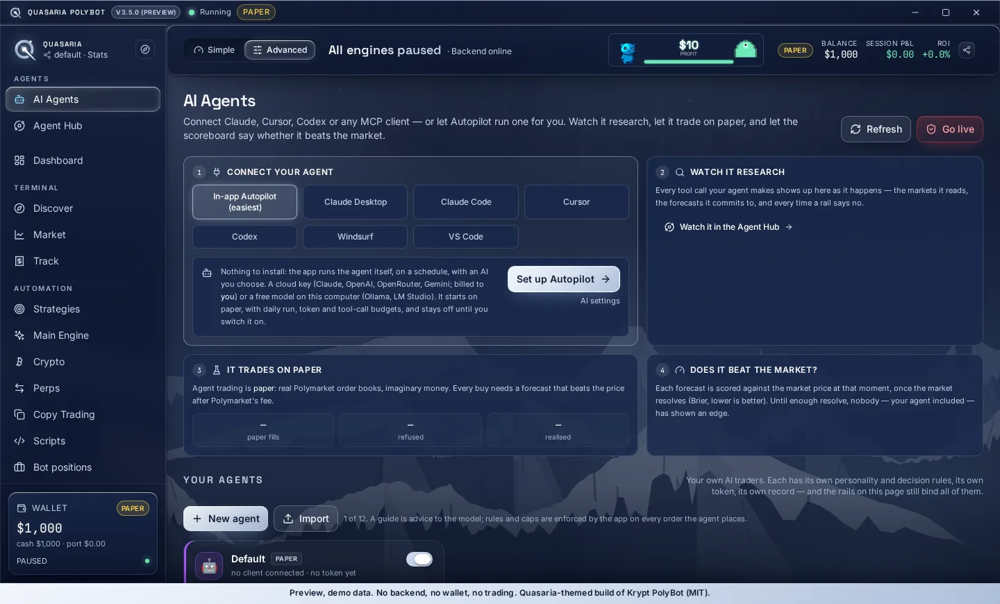
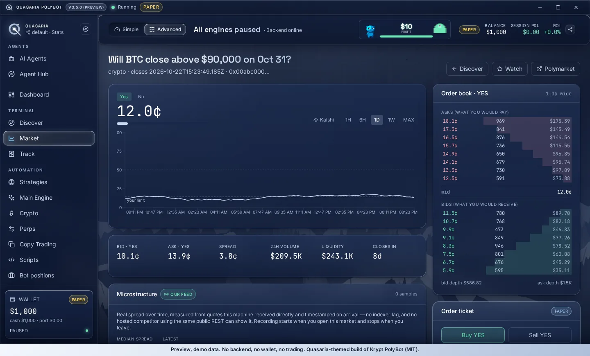
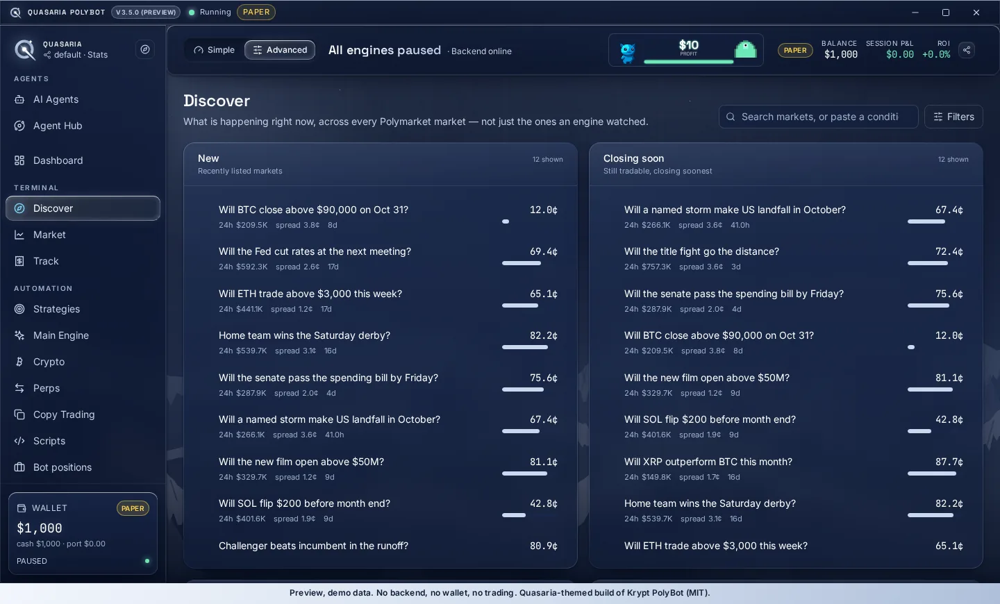
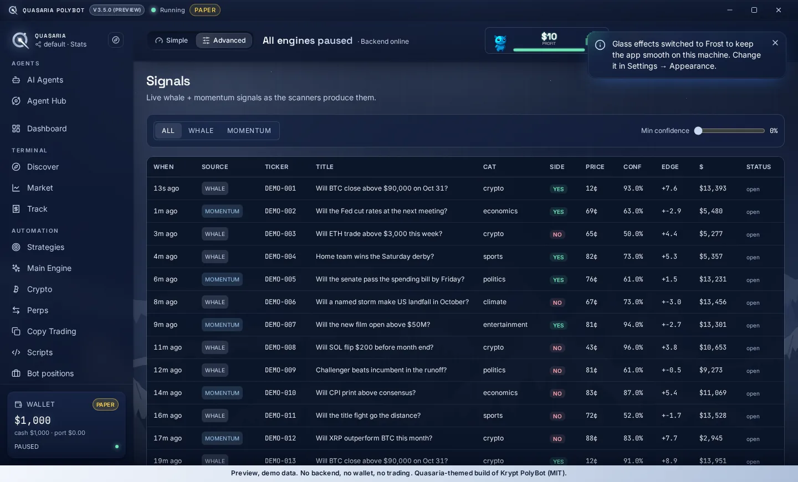
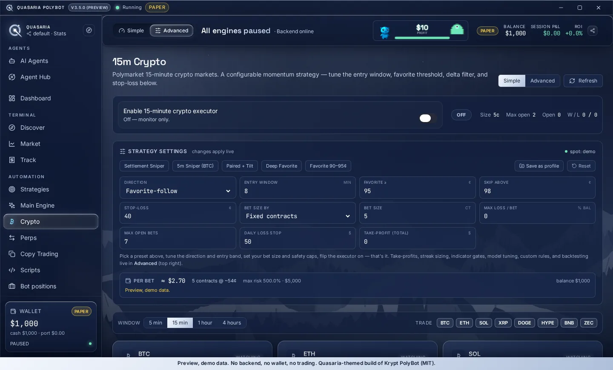
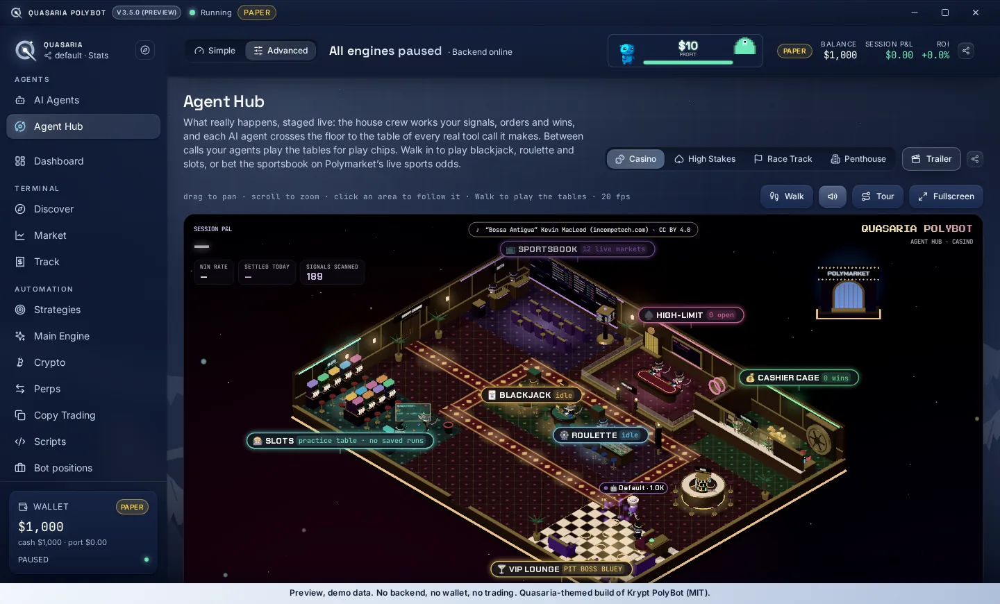
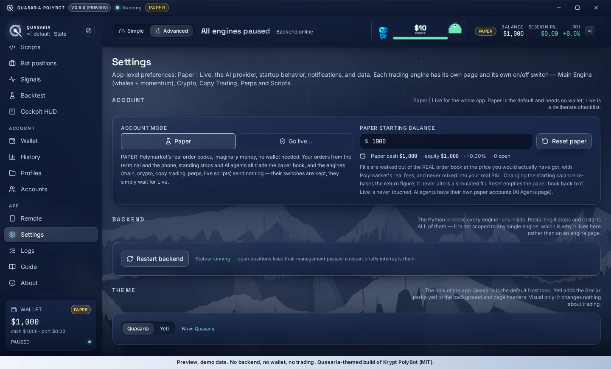
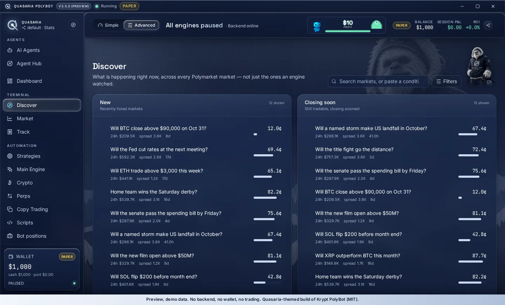

AI agents over MCP
Connect Claude, Cursor, Codex or any MCP client as a named trader, or let Autopilot run one on a schedule. Every agent is fenced in by caps, a daily loss stop and a forecast it must beat, then scored against the market.
Polymarket toolkit · Paper-first
Quasaria PolyBot puts AI agents over MCP, a manual trading terminal, whale and momentum scanners, copy trading, a perps market maker and your own strategy scripts in one desktop app. It starts on Paper with every engine off, and your keys stay on your machine.
The portal is a browser preview with demo data only: no backend, no wallet, no trading.
What it is
A Quasaria-themed build of the open-source Krypt PolyBot desktop app. Every feature of the original is kept; the look is the only thing that changed.
Connect Claude, Cursor, Codex or any MCP client as a named trader, or let Autopilot run one on a schedule. Every agent is fenced in by caps, a daily loss stop and a forecast it must beat, then scored against the market.
Discover, search and trade any Polymarket market by hand: live order book, price history, tape, resolution-rule checks and paper or live tickets.
Watch the public trade feed for large-wallet activity and short-term momentum clusters, with confidence and edge scores on every signal.
Mirror wallets you choose, with sizing, entry-price limits, a concurrency cap and a loss limit.
A quoting engine for Polymarket Perps with its own link, caps and a flatten-everything switch.
Write your own Python strategies, run them in shadow mode against the live market, backtest on recorded data and arm them yourself when you are satisfied.
Rules-based engine for the short-term crypto Up/Down markets, with its own sizing, windows and collection of data to backtest.
A live 3D view of what your agents and engines are doing, plus cockpit, positions, history and logs.
Safe by default
The defaults are built so that opening the app cannot cost you money.
Themes
Two looks, switchable any time under Settings > Theme. Visual only: the theme changes nothing about trading.


Screenshots
Captured from the browser preview, so every number is demo data.








Read this first
Open the portal, switch between Quasaria and Yeti under Settings, and click through every page. Nothing is connected and nothing can trade.
Based on Krypt PolyBot (MIT).